My name is Colman Keane. I am a 22 year old student, in final year of the BSc Applied Psychology degree in the Institute of Art, Design and Technology (IADT), Dublin, Ireland. It has provided me with the opportunity to study Psychology and the use of it in technology, looking at how research can create new ways to improve the quality of day to day life. I have chosen the tech/design path, focusing on UI, UX and Graphic Design. In doing this, I discovered a passion for graphic design and web construction. The process of building something from scratch, and seeing the final design look as good as you had hoped, is a feeling like nothing else.
I find working in teams particularly enjoyable, sharing ideas and helping one another maximise our concepts. I began the Applied Psychology course because of my interest in people and understanding what makes them tick. Although I enjoy the core psychology modules, I quickly changed my focus towards the technology side of the course. It began with a cyber psychology module in my first year, where we learnt about how people become addicted to video games and how game designers utilise this. From there, I had the opportunity to learn much more about multimedia, HCI and Usability that rounded my knowledge of app creation and what a user looks for when buying/using apps and websites. A big part of what I found necessary to maximize user experience was the feeling of flow (Csiksentmihalyi, 1975) and how to get the user in this mindset. In addition to completing my other HCI and psychology modules, I am currently completing my thesis on this theory of flow, and how it is brought out in video game users.
The purpose of this webpage is to demonstrate and improve my web programming skills as well as giving some examples of projects I have worked on to date.
UX and UI projets
MRHYTHM
This is my most recent project. As part of my fourth year HCI assignments, I was tasked with making a programmed website, created by a student in the computer science course in my college, more user friendly. I chose a web based drum machine called MRHYTHM.
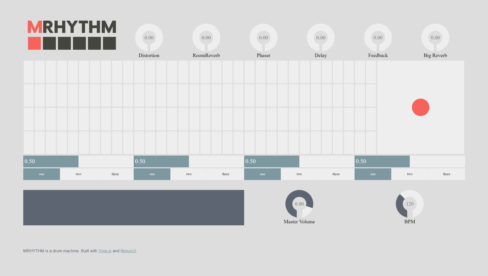
Although this was a brilliant application to begin with, I felt it needed to be made easier to use for a beginner user group. A key element of this assignment was engagement with a focus group, along with paper prototyping, user testing, and wire-framing. I conducted a large-scale focus group, with the use of participants from different demographics to maximise my results. When the key usability issues were identified, I got to work researching the best way to correct the problems. Invision was used to create the high fidelity prototype. I was pleased with how the end product turned out, managing to keep the original creator happy as well as improving user experience for the focus group, something that doesn’t always go to plan. This was the final design:
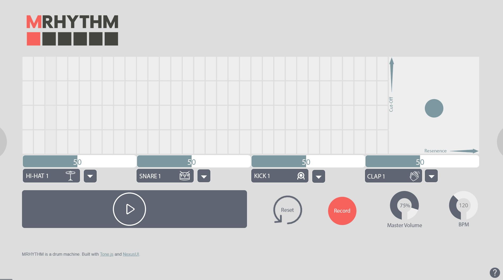
For more information on what went into this project, please contact me and I would be delighted to send you the full research paper. I have also attached a walkthrough video of its usability for a better idea of how it works below:
Let's Go
As part of my Web Applications module this year, we were asked to help create a interactive game to help teach independence to people with specific learning difficulties. This was to be included in the 'Let’s Go' program, run by Carmona Services. I created a segment on road safety. Again, this project included paper prototyping, user testing, wire-framing, and high fidelity coded web pages. Adobe Photoshop and Illustrator were used for the creation of the images.
Firstly, I drew up a rough idea of what pages I felt were needed and what sort of game it would be. I opted for a simple ‘click the right answer’ game.
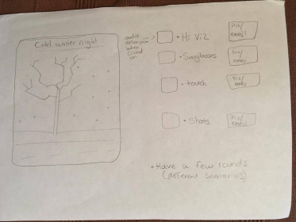
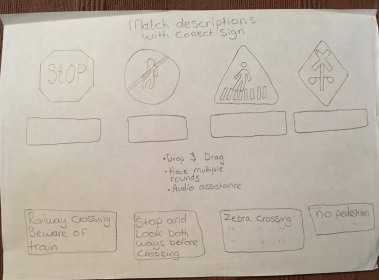
Next, I moved on to wire-framing and making a higher fidelity prototype, using Photoshop. This allowed me to see if my initial design would work on screen as well as on paper.
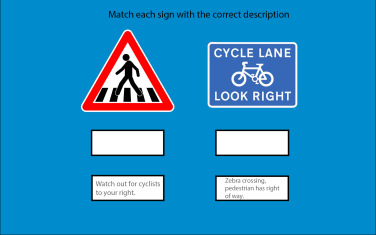
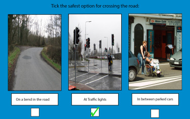
Finally, I moved onto my high fidelity coding. I used HTML and CSS to create the webpages.
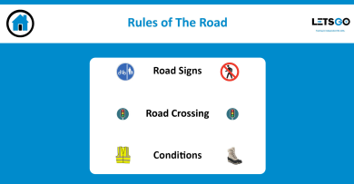
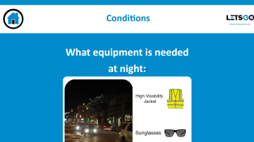
I have attached a quick video demonstration of how the game runs:
The game is currently being user tested by a selected group from Carmona Services to determine if changes will need to be made.
Group IT Project
In my 3rd year Group IT module, myself and two other Psychology students were set the task of creating a full prototype of an app/website that's purpose was to benefit others. We settled on ‘Lit Learning’ as the name. We aimed to make learning of college material easier by providing study tips/strategies and having walk-through tutorials of common problems explained in a way that wasn’t overly complicated. We focused on statistics in particular for the purpose of this project.
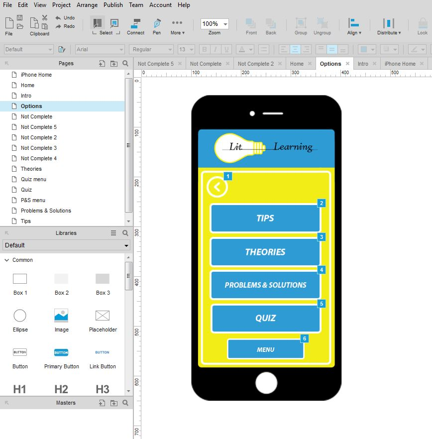
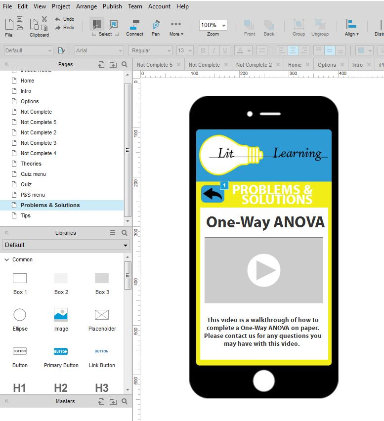
As in the other projects, this also included paper prototyping, user testing, wire-framing, and a high fidelity prototype, made on Axure.
Research Projects
The Cerebrum Run
As part of our Neuropsychology module in 3rd year, we were asked to create a game to assist with the learning of the parts of the brain. My classmate and I created ‘Cerebrum Run’, using Photoshop and Adobe Illustrator to design the layout.
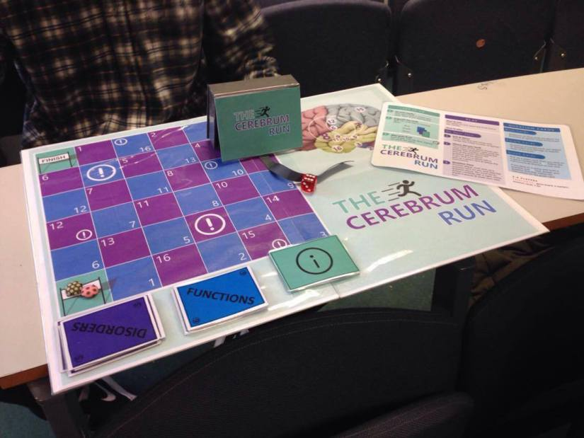
The aim of the game is to move along the board from the start flag to the finish. Players advance along the board depending on what number they get after rolling the dice (3 on the dice = 3 spaces). If you land on a blue square you are asked a brain function question, and if you land on a purple square you are asked a brain disorder question. The numbers on the board correspond with numbers on each card, meaning each square has a specific card question, as well as corresponding with a section of the brain labeled in the top right of the board. The exclamation squares are Punishment Cards. Example: If the player has landed on the square with the number corresponding to the frontal lobe of the brain map, then the player can be left unable to talk for a round (due to damage to their Broca’s areas). The game comes fully equipped with the board, function, disorder and punishment cards, a dice, instruction sheet and box.
Major Research Project (Thesis)
As mentioned in the About Me section, I am currently completing my thesis on the topic of flow in video games. I have always had an interest in video games, but only became aware of the idea of flow after studying it in the first year of my degree. Since then I have adopted it fully into my life. Combining these two together seemed like the perfect project. I am currently recruiting participants for this experiment so have yet to complete this study. Once complete, a copy will be made available here: